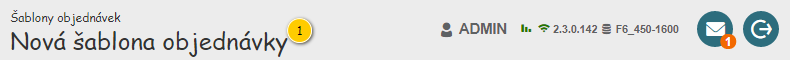
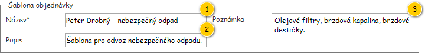
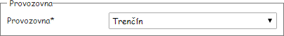
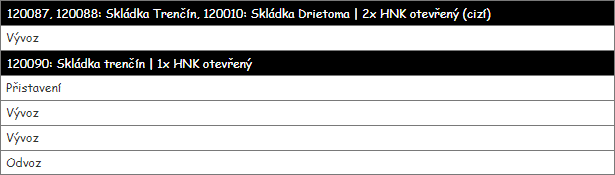
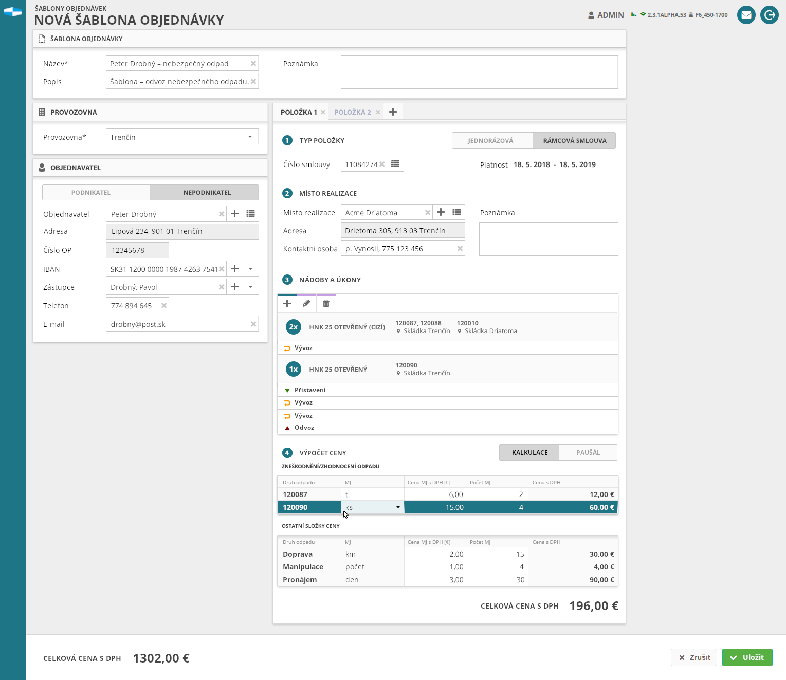

Stručný popis
Formulář slouží k zobrazení entity Šablona objednávky, která je jeho vstupním parametrem.
Poznámka: Vstupem formuláře může být i entita Objednávka.
Uživatelské rozhraní
Formulář je tvořen z ucelených skupin, které budou postupně popsány. Výchozí nastavení hodnot jednotlivých komponent prázdného formuláře je uvedeno ve sloupci Výchozí hodnota, a to v tabulkách s Přehledem UI komponent jednotlivých částí UI.
Poznámka: Formulář z větší části vychází z Formuláře objednávky, na jeho jednotlivé části je tedy často odkazováno a uvedeny jsou především odlišnosti. Stav Objednávky pak není rozlišován – pro potřeby rozhodování o dostupnosti a chování komponent je použit stav:
- Žádný stav (objednávka zatím není uložena) – není dostupná entita Objednávka.
- Rozpracovaná – je dostupná entita Objednávka.
Dle tohoto „imaginárního“ stavu Objednávky při práci se Šablonou objednávky se odvíjí i povinnost zadání hodnot v jednotlivých komponentách formuláře – musí být zadán pouze Název entity Šablona objednávky, ostatní atributy jsou volitelné. Pokud je však hodnota vyplněna, musí být validní.
Poznámka: Entita Objednávka může být dostupná jako atribut entity Šablona objednávky, nebo přímo jako vstupní hodnota formuláře.
Rozložení
Drátový diagram

Přehled UI komponent
| Callout | Skupina |
|---|---|
| 1 | Nadpis formuláře |
| 2 | Informace o šabloně objednávky |
| 3 | Provozovna |
| 4 | Objednavatel |
| 5 | Položky objednávky |
| 6 | Dokončení šablony objednávky |
Nadpis formuláře
Nadpis je umístěn v hlavičce aplikace (700UI03: Hlavička aplikace).
Drátový diagram

Přehled UI komponent
| Callout | Komponenta | Nadpis | Typ komponenty | Příklad hodnoty | Hodnota | Výchozí hodnota | Formát | Zpřístupněná | Viditelná | Chování | Validace | Poznámka |
|---|---|---|---|---|---|---|---|---|---|---|---|---|
| 1 | Nadpis formuláře | – | Label | Peter Drobný – nebezpečný odpad | Entita Šablona objednávky (jedná se o vstupní parametr formuláře, může být NULL). | Nová šablona objednávky | Pokud je hodnota různá od NULL:
Jinak (zahrnuje i případ, kdy je vstupem formuláře entita Objednávka):
| – | Vždy | – | – | – |
Informace o šabloně objednávky
Drátový diagram

Přehled UI komponent
| Callout | Komponenta | Nadpis | Typ komponenty | Příklad hodnoty | Hodnota | Výchozí hodnota | Formát | Zpřístupněná | Viditelná | Chování | Validace | Poznámka |
|---|---|---|---|---|---|---|---|---|---|---|---|---|
| 1 | Název | Název* | TextBox | Peter Drobný – nebezpečný odpad | Entita Šablona objednávky. | – | Vždy | Vždy | – | Povinná hodnota. Jedinečná hodnota. Maximálně 255 znaků. | – | |
| 2 | Popis | Popis | TextBox | Šablona pro odvoz nebezpečného odpadu. | Entita Šablona objednávky. | – | Vždy | Vždy | – | Maximálně 255 znaků. | – | |
| 3 | Poznámka | Poznámka | MultilineTextBox | Olejové filtry, brzdová kapalina, brzdové destičky. | Entita Šablona objednávky. | – | Vždy | Vždy | – | Maximálně 255 znaků. | – |
Provozovna
Od skupiny Provozovna ve Formuláři objednávky se tato skupina liší v množství údajů, které je možné zadat. Ve formuláři Šablony objednávky je k dispozici pouze nastavení konkrétní Provozovny.
Drátový diagram

Přehled UI komponent
Viz Přehled UI komponent.
Chování
Viz Dostupné provozovny.
Objednavatel
Drátový diagram
Viz Drátový diagram.
Přehled UI komponent
Viz Přehled UI komponent.
Chování
Viz Chování.
Položky objednávky
Od skupiny Položky objednávky ve Formuláři objednávky se tato skupina liší v množství údajů, které je možné zadat u Objednané nádoby při jejím vkládání. Konkrétně se jedná o absenci možnosti nastavení Objednaného úkonu závislou na Podmínce vykonání:
- Výzva – neliší se,
- Termín – není možné nastavit konkrétní časové okno,
- Pravidlo opakování – není možné nastavit konkrétní Pravidlo opakování.
Rozdílné je pak i zobrazení komponenty s Objednanými nádobami – je skryt sloupec s upřesněním Podmínky vykonání.

Drátový diagram
Viz Drátový diagram.
Přehled UI komponent
Viz Přehled UI komponent.
Chování
Viz Chování.
Dokončení šablony objednávky
Od skupiny Dokončení objednávky ve Formuláři objednávky se tato skupina liší v několika ohledech:
- Nejsou dostupné komponenty pro zadání přijaté zálohy a pro nastavení stavu Objednávky.
- Vždy jsou zobrazena pouze tlačítka zrušení a uložení změn Šablony objednávky.
Drátový diagram

Přehled UI komponent
Viz Přehled UI komponent.
Chování
Grafický návrh
Pozor: Zobrazené hodnoty jsou pouze ilustrativní (např. zobrazení kalkulace a rámcové smlouvy zároveň).
